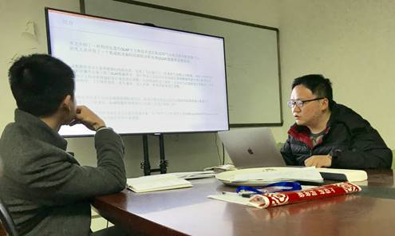
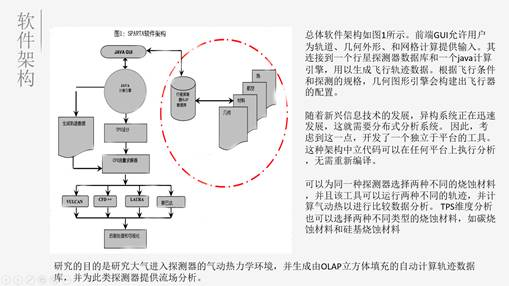
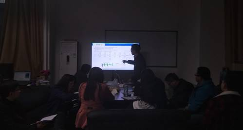
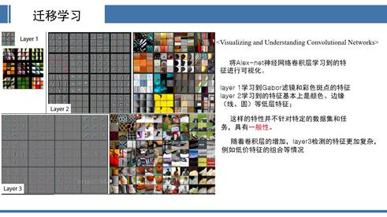

新学期第二次例会
新的一学期已经开始两周，此次实验室召开了本学期的第二次学术分享例会。此次参加的成员有蔡文杰、刘欢、李光伟、罗国婷、冯姣、唐怡、张弛名、骆蓉、闫博文、蒙小龙和罗斐等11位研究生同学，以及黄俊老师和王庆凤老师指导此次例会的顺利进行。
会议分为两部分进行，第一部分是同学们各自总结这一周的学习内容和心得体会，第二部分是由蔡文杰同学分享《基于集成OLAP立方体数据库驱动的行星探测器的气动热力学轨迹分析》，以及张驰名同学分享《Transfer learning》（迁移学习）。

OLAP （联机分析处理）是于1993年提出的一种数据动态分析模型，它的核心概念分别是维度和度量。OLAP的基本多维分析操作有钻取（Drill-up和Drill-down）、切片（Slice）和切块、以及旋转（Pivot）等。

OLAP集成软件架构
为了对再入飞行器进行初步研究，研究人员们开发了一种独立于平台的用于进行工程级别分析，基于OLAP数据库驱动的JAVA GUI应用程序。 该编码计算沿轨道的所有飞行状况，包括空气动力学和气动热力学驻点数量，并将数据填充到OLAP数据库中，用于比较分析。 轨道计算采用了四阶龙格库塔积分。 此外，还开发了一种基于现有行星探针器设计的综合数据库，并与3自由度GUI工具集成。 一种优化轨迹的算法也被嵌入到了代码中，用于下冲，过冲和最优低风险轨迹。

张弛名同学讲解迁移学习
什么是迁移学习？从心理学角度：人们利用之前的经验和知识进行推理和学习的能力。举一反三的能力。从机器学习角度：一个系统将其他相关领域中的知识应用到目标任务中的学习模式。

神经网络迁移学习
网上公开数据集非常庞大，下载别人训练了几周权重并作为网络的初始化，可节省大量的计算资源和时间。进行微调时并不是从随机初始值开始进行梯度下降,通常经过小幅度的调整后就可以达到新的最优值, 有效缓解过拟合问题并加快了网络收敛。迁移学习具有良好的泛化性，可应用于先进神经网络VGG16，Resnet50…而无需自己对网络架构进行设计，开发设计成本低。